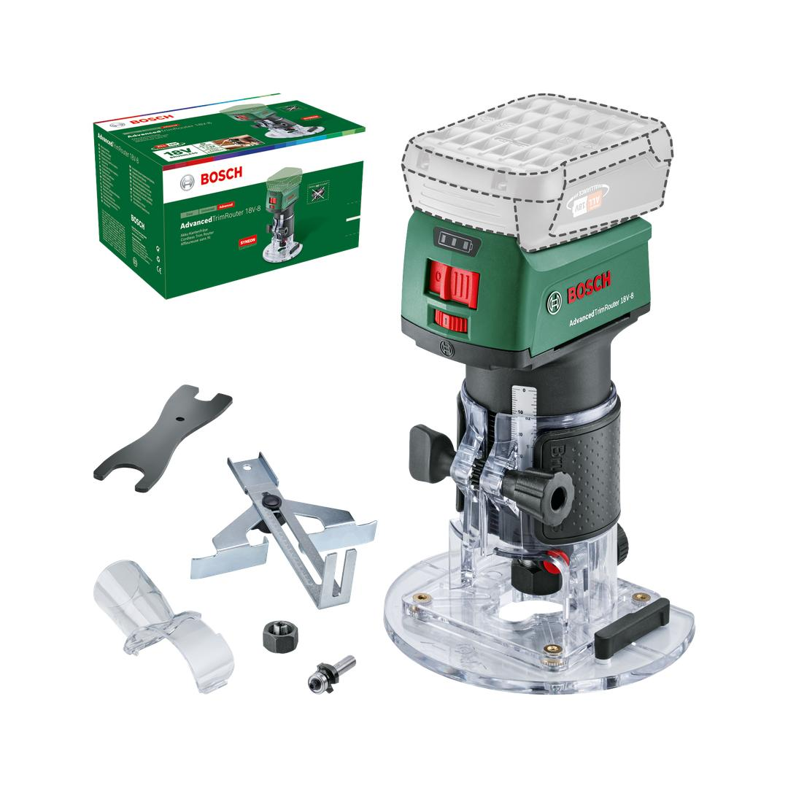
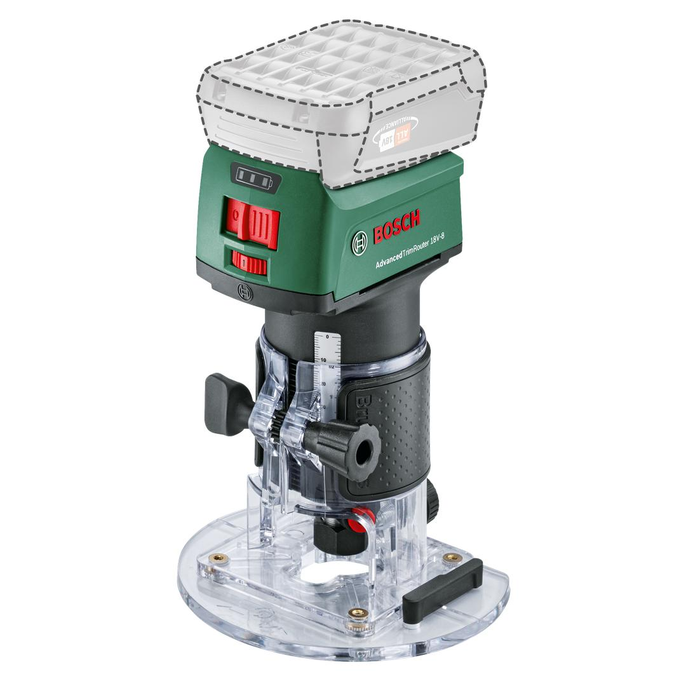
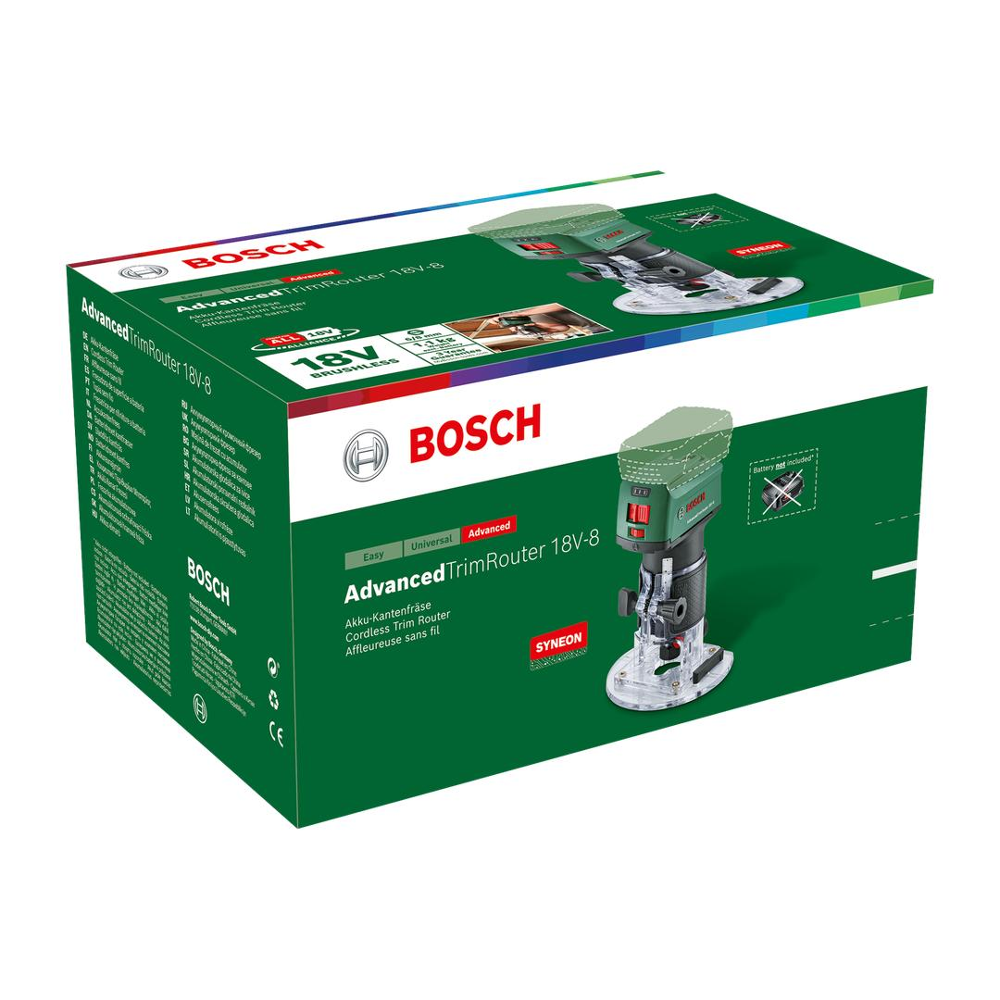

06039D5000



| Battery voltage |
18.0 V |
| Battery compatibility |
18V POWER FOR ALL ALLIANCE |
| Battery recommendation |
>=2.5Ah |
| Toolholder (supplied) |
6 mm 8 mm |
| No-load speed |
10,000 – 30000 rpm |
| Trim router: Maximum router cage stroke |
38 mm |
| Trim router: Tool dimensions (L x W x H) |
120 x 140 x 186 mm |
| Trim router: Weight excl. battery |
1.1 kg |
| Product category subdivision |
Cordless Router |
| Maximum router cage stroke |
38 mm |
| Tool dimensions (L x W x H) |
258 x 160 x 136 mm |
| Noise level |
The A-rated noise level of the power tool is typically as follows: Sound pressure level dB(A); Sound power level dB(A). Uncertainty K= dB. |
| Packaging dimensions (length) |
258 mm |
| Packaging dimensions (width) |
160 mm |
| Packaging dimensions (height) |
136 mm |
| Packaging dimensions (L x W x H) |
258 x 160 x 136 mm |
Cordless, powerful and compact trim router for creative woodworking